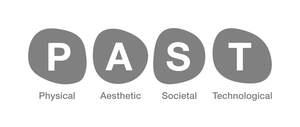

Trade Mark Journal No.2025/039 26 September 2025
UK00004264260 15 September 2025 (35,41,42)

- Class 35
- Business management assistance and consultancy services; marketing; market research; advertising; corporate identity services; brand development; brand monitoring services; brand creation services; branding consultancy services; evaluation services; public relations services; information, advise and consultancy services in respect of brand positioning; brand testing; brand strategy; advertising agency services; advertising services including Internet advertising via banner advertising, HTML emails, search engine paid listings (pay per click), affiliate programs, rich media advertising; arranging direct mail and marketing services; planning, buying and negotiating advertising and media space and time; business services in relation to creation, screening, testing and evaluation of proposed brand names and trade marks including brand research; research services regarding brands; advisory, information and consultancy services relating to the aforesaid services.
- Class 41
- Education; providing of training; business training services; educational services relating to business; training in business management; commercial training services; arrangement of conferences, conventions, seminars and exhibitions; educational services, namely, conducting conferences, classes, seminars and workshops in the field of marketing and distribution of course materials in connection therewith in printed or electronic format; providing online non-downloadable magazines featuring industry news and information regarding design services, brand development and brand consultancy; advisory, information and consultancy services relating to the aforesaid services.
- Class 42
- Design services; product design and development services; packaging design; design and creation of audio and/or visual creative works; creating and designing web sites for others; advisory, information and consultancy services relating to the aforesaid services; brand monitoring services; computer services; consultancy and advisory services in the field of information technology; computer systems integration; design, development, updating, maintenance and repair of computer software; computer programming services designing, implementing, maintaining, servicing and managing web sites for others; providing temporary use of on-line non-downloadable computer software development tools for creating web sites and creating electronic bulletin boards for the transmission of messages among computer users; computer web site consultation; advisory, information and consultancy services relating to the aforesaid services.
DCA Design International Limited
Representative: Groom Wilkes & Wright LLP